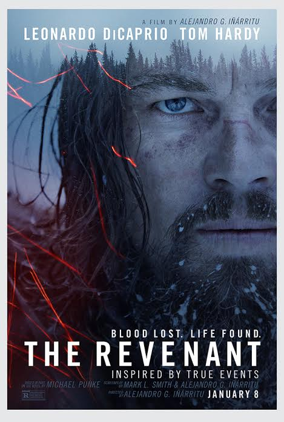

Pook's Pick

Hit or Shit

The Revenant

I love films that take place in the west, especially the old west! It's where I am from and why I spent a good chunk of my early education learning about those wild, trapping mountain men!
Revenant means "a person who has returned from the dead", and DiCaprio played his ghostly character Hugh Glass excellently, second only to Tom Hardy, who did an absolutely amazing job at being an unlikable asshole (seriously I didn't even know it was him until the credits). Returning from the brink of death for his revenge, DiCaprio travels through the beautifully and painstakingly shot landscape. I was so excited for the cinematography in this movie, and it did not disappoint! It was absolutely beautiful to look at; you could almost see your breath in the theater. I found myself pulling my coat tighter around me because I could almost feel the cold. I enjoyed the relatively simple story- it didn't take away from the great acting and beautiful shots. I also love Domhanall Gleeson more and more with each film I see him in.
The movie does start to feel a little less survival and a little more... "Leonardo DiCaprio in a thousand ways to die in the west" towards the middle, which I wouldn't mind except for this movie is going for a very realistic tone. You can only watch Leonardo almost die so many times before you start catching yourself saying "omg you would never live if that happened in real life ugh" over and over again.
It was another very loooong film that ends in what I like to describe as a really long boss fight.
All in all, still very enjoyable despite its shortcomings!

 2nd Thoughts
2nd Thoughts
This was an odd but delightful night of events. The Revenant is a beautiful moive. This is the the one to win Leo.. the Little Gold Man. Possibly the E.G.O.T. A Skunk would have been cool. I couldn't tell if it was Tom Hardy or not, Not that his is a bad thing. The make-up and set and everything about the physical staging was great. (STORY TIME) Me and the boys decided to go get Appleb's before the moive. It was packed neck deep and I was the last out the door still eating, everyone else basicly had to get to-go boxes. We were very rushed for time.
The revenant was a breath of fresh air for a cinema that's been saturated with super hero flicks as of late. It tells a grim story while also being visually pleasing to the eyes, many times leaving me in awe as the camera panned over the beautiful landscape or closed in to show finer details. For your consideration, if the viewer enjoys this movie as much as I did, I would like to recommend The Grey, as it has a similar tone.